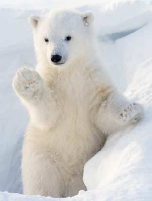

Fonte des glaces ours polaire |
|
L'impact sur les ours polaires |
La fonte des glaces a un impact significatif sur les ours polaires, qui dépendent de la glace de mer pour leur survie. Avec la diminution de la glace de mer, les ours polaires ont moins de possibilités de chasser et ont donc moins à manger. De plus, ils sont obligés de passer plus de temps sur terre et de se tourner vers des sources de nourriture terrestres. Si cette tendance se poursuit, les ours polaires pourraient disparaître d’ici 2100. |